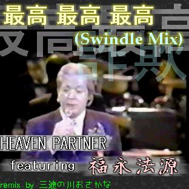

更新履歴
※古いものはリンク切れしてるものがあります。ご了承ください。
-
2018年06月19日:
[追加]おんがく→夜のぜんぜんだめ (カラオケ)
[更新]死んでるコンテンツをしまったり説明を更新したり？
-
2018年06月02日:
[追加]おんがく→夜のぜんぜんだめ
-
2013年04月06日:
[更新]便利ツール→iTunesふりかけ2.1.1
-
2013年02月09日:
[追加]身近なインベーダーというクソゲーを追加しました。どこに追加したかは教えない。
-
2012年07月01日:
[追加]おんがくのページに以下のmp3音源を追加しました。
・頭にヘビ
・頭にヘビ(カラオケ)
・晴れの雨音
・晴れの雨音(カラオケ)
[通知]自作曲の曲名、アーティスト名などにボカロ or UTAU音源の名称を付加するのをやめて、コメント欄に書くようにしました。こっちの方がアーティスト名検索するときに扱いやすいためです。
-
2012年06月12日:
[更新]おんがくのコーナーのいくつかの作品にコメントを付けました。
[通知]サイト内のhtmlソースの整理をしています。jqueryを積極的に使って遊んでいます。 -
2012年06月06日:
[通知]サイトが消滅してしまったため、サイトの引越しを行いました。
[通知]サイトに掲載しているメールアドレスを変更しました。以前サイトに掲載していたメールが使用出来なくなっていたためです。
-
2012年01月15日:
[更新]便利ツール→iTunesふりかけ
カタカナで読みを振る機能を追加しました。
-
2011年12月11日:
ニコニコ動画に「頭にヘビ」をうｐしました
-
2011年09月25日:
[追加]便利ツール→iTunesふりかけ
iTunesに取り込んだ曲に自動でなんとなく読みがなを振るプログラムです。
-
2011年06月27日:
ニコニコ動画に「晴れの雨音」をうｐしました
-
2011年01月24日:
[追加]着メロ→daniwell→Nyanyanyanyanyanyanya!
(元ネタ)
-
2010年09月22日:
[追加]着メロ→グルグル映畫館→夜の紺碧の所為なのです
-
2010年08月16日:
[追加]おんがく→イツマノニカ feat. 桃音モモ
ニコニコ動画に「イツマノニカ」をうｐしました
-
2010年06月28日:
[追加]走りながら叫び狂う者の地獄のこけおどし
-
2010年05月30日:
[追加]着メロ->たま->電車かもしれない
-
2010年04月29日:
[更新]着メロ->麻原彰晃->ガネーシャ体操(16和音のみ微修正)
-
2010年04月21日:
[追加]着メロ->kihirohito->愛される犬
- 2009年02月01日
[追加]うねうね掲示板 - 2008年09月08日:
[新規]だみだみ掲示板
[更新]着メロの試聴をJavaで行うようにしてみた
[追加]着メロ->谷山浩子->リカちゃんのポケット
[追加]着メロ->谷山浩子->ウミガメスープ
[追加]着メロ->谷山浩子->意味なしアリス -
2008年01月03日:
[追加]着メロ->みんなのうた->まっくら森の歌
[更新]過去のトップ絵 -
2007年11月07日:[追加]
さかないじめ - 2007年07月30日：着メロの倉橋ヨエコの椿壮を追加
- 2007年04月09日：着メロのジムノペディの手紙を追加
- 2007年03月26日：着メロのグルグル映畫館のお話の後の唄を追加
着メロのあがた森魚の女の友情を追加
着メロの麻原彰晃の極厳修行者音頭を更新 - 2007年02月04日：週刊お絵かきのコーナーを更新
- 2007年01月28日：週刊お絵かきのコーナーを更新
- 2007年01月21日：週刊お絵かきのコーナーを更新
- 2007年01月14日：週刊お絵かきのコーナーを更新
- 2007年01月08日：週刊お絵かきのコーナーを追加,ぎょっの細かいとこを色々いじる
- 2007年01月01日：過去のトップ絵を更新
- 2006年12月11日:おんがくのコーナー

「最高 最高 最高(Swindle Mix)」で、無音区間を消すのと音量の底上げするの忘れてました。直しました。 - 2006年12月10日:おんがくのコーナーに
「最高 最高 最高(Swindle Mix)」を追加。 - 2006年10月01日:着メロのコーナーのグルグル映畫館に「紺碧さに誘われた子供」を追加。
- 2006年09月10日:着メロのコーナーのみんなのうたに「グラスホッパー物語」を追加。のっぽさんの歌ってるやつですよ。